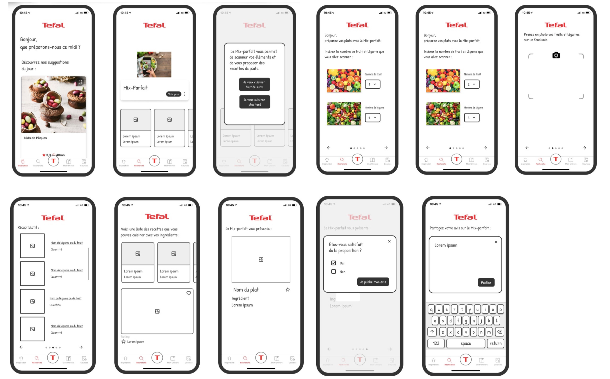
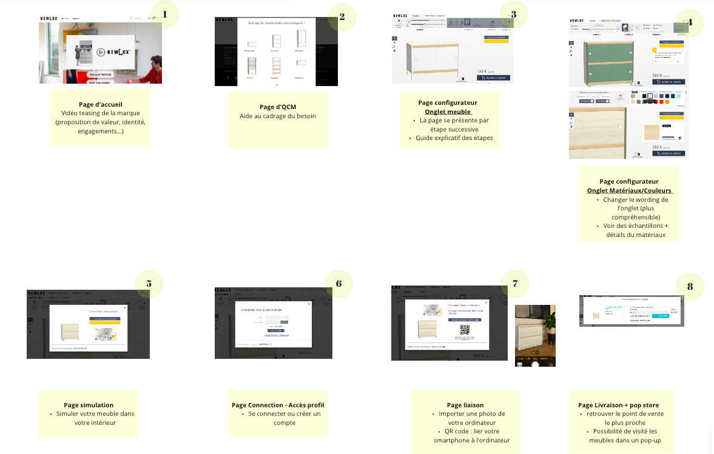

UX - UI
Téfal
Pendant notre cours d'UX, on a travaillé avec la marque Téfal du Groupe SEB.
-> L’objectif était d’explorer l’opportunité d‘un dispositif d'accompagnement à la préparation de recette et proposer un nouveau parcours utilisateur.
Téfal est une entreprise française spécialisée dans la fabrication et la distribution de produits électroménagers et de petit électroménager. Elle est reconnue dans le monde entier pour la qualité de ses ustensiles de cuisine, de ses casseroles et de ses poêles antiadhésives.
La société possède une expertise industrielle et commerciale considérable dans les domaines des articles culinaires et des petits appareils électroménagers.
Depuis plusieurs années maintenant, le groupe offre des services complémentaires pour améliorer l'expérience culinaire des utilisateurs lors de la préparation de leurs repas.
- Scanner les ingrédients (fruits - légumes…)
- Proposition de recette de plat en fonction des ingrédients scannés
-> Personnalisation du plat

KEWLOX
Pendant notre cours d'Anthropologie, on a travaillé avec la marque Kewlox.
-> L’objectif était de revoir le parcours utilisateur, de détecter les faiblesses de leur site web et de proposer un nouveau parcours pour leur configurateur de meuble.
Kewlox est une entreprise familiale belge qui se spécialise dans la fabrication et la vente de meubles conçus selon une méthode d'assemblage exclusive. Chaque meuble Kewlox est constitué de cornières en acier qui servent de cadre pour les traverses et les tasseaux en bois brut.
Ces éléments forment la structure du meuble, à l'intérieur de laquelle s'insèrent des panneaux minces en MDF, en MDF mélaminé, en verre, en miroir, en verre acrylique, etc., pour fermer le tout.
Grâce à ce procédé d'assemblage, aucun outil n'est normalement nécessaire pour construire un meuble Kewlox, car chaque pièce s'emboîte parfaitement dans une autre.
Application : lien prototype
Étape 1 : interview utilisateur
- Recueil des besoins, les comportements, les attentes
- Comprendre les obstacles rencontrés
Étape 2 : User map
- Comprendre le parcours de l’utilisateur et les différentes étapes de son expérience
- Identifier les points de douleur et les points forts dans l’expérience utilisateur
- Trouver des opportunités pour améliorer l’expérience utilisateur
- Assurer que la conception soit centrée utilisateur
- Prioriser les fonctionnalités et les améliorations en fonctions des besoins utilisateur
Étape 3 : Storyboard
- Visualiser le nouveau parcours de l’expérience utilisateur
- Comprendre les différentes étapes d’intéraction
- Valider les hypothèses et les idées de conceptions
- Trouver des opportunités pour l’amélioration l’expérience utilisateur
- Prévoir les problèmes potentiels à chaque étape de l'interaction
